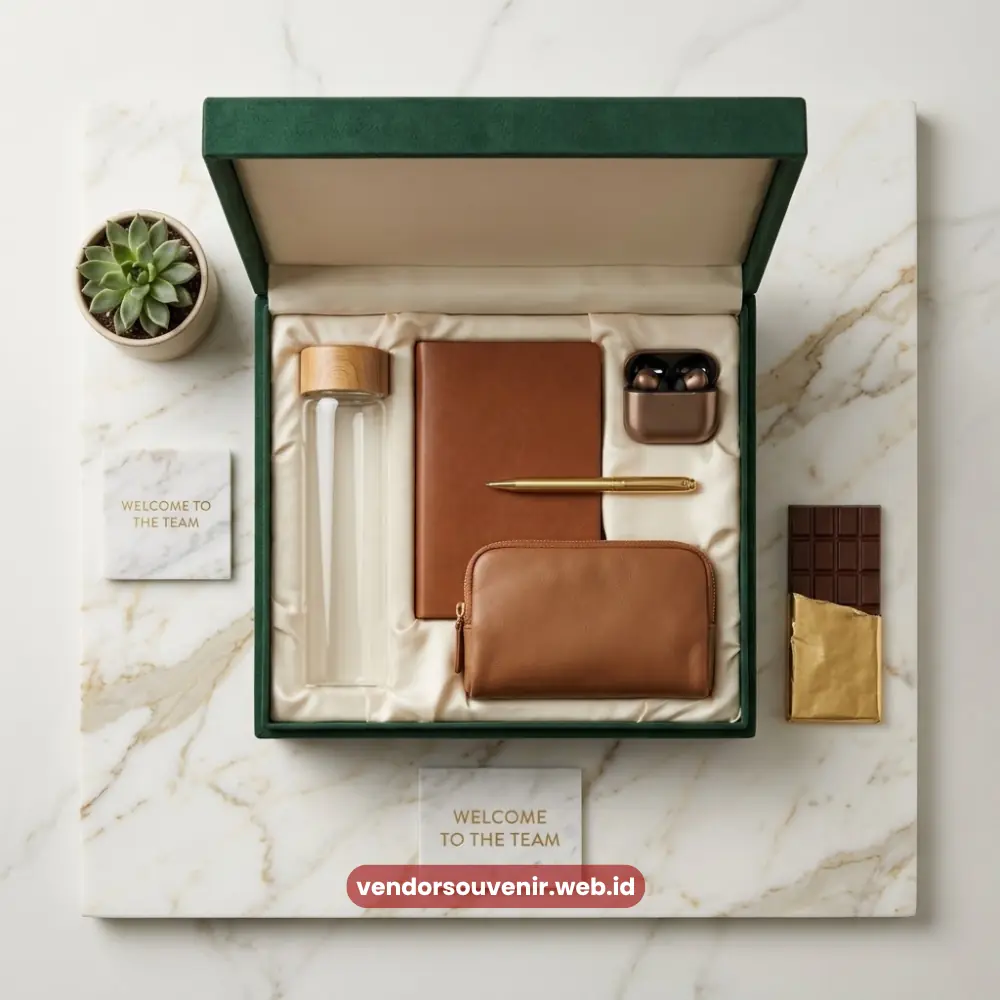
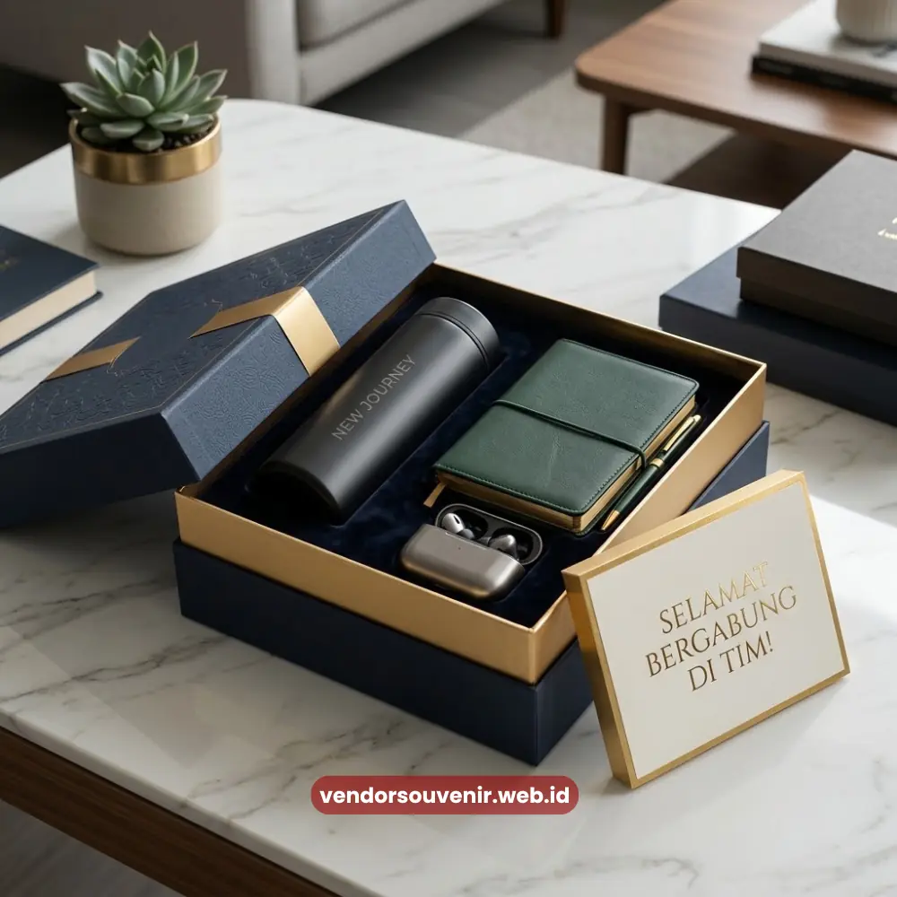

Daftar Isi
Manfaat paket onboarding karyawan mencakup peningkatan kesan pertama dan penguatan rasa memiliki.
Serta dukungan produktivitas kerja sejak hari pertama karyawan baru mulai bergabung.
Selain nilai emosional, paket ini juga memberikan berbagai manfaat yang sangat praktis.
Karyawan bisa langsung memiliki perlengkapan kerja dasar tanpa perlu mempersiapkannya sendiri.
Vendor Souvenir membantu perusahaan menghadirkan pengalaman onboarding yang berkesan.
Melalui paket yang sangat fungsional dan sekaligus mencerminkan identitas brand.
- Paket onboarding mempercepat adaptasi karyawan baru terhadap lingkungan kerja.
- Kesan pertama yang positif berpengaruh pada loyalitas karyawan jangka panjang.
- Item fungsional dalam paket mendukung produktivitas kerja sejak awal.
- Paket onboarding turut memperkuat strategi employer branding perusahaan.
- Investasi pada onboarding berdampak pada budaya kerja yang lebih solid.
Apa Manfaat Paket Onboarding Karyawan bagi Perusahaan?
Paket onboarding karyawan memberi manfaat berupa penguatan kesan pertama yang diterima karyawan.
Kesan ini menjadi fondasi awal bagaimana karyawan memandang budaya kerja yang ada.
Termasuk memahami nilai-nilai perusahaan tempat mereka kini bernaung.
Dan menilai tingkat perhatian manajemen terhadap kesejahteraan timnya secara keseluruhan.
Bagaimana Kesan Pertama Mempengaruhi Kinerja Karyawan?
Karyawan yang merasa disambut dengan baik sejak hari pertama cenderung lebih cepat nyaman.
Rasa percaya diri juga akan lebih mudah tumbuh dalam menjalankan tugas-tugas barunya.
Rasa nyaman ini secara tidak langsung turut mempengaruhi kecepatan adaptasi karyawan.
Terutama dalam menyesuaikan diri terhadap sistem kerja dan dinamika budaya tim yang baru.
Bagaimana Pengaruhnya terhadap Loyalitas Karyawan?
Pengalaman onboarding yang sangat positif dapat berkontribusi pada tingkat loyalitas karyawan.
Khususnya komitmen karyawan terhadap perusahaan dalam jangka waktu yang cukup panjang.
Ketika karyawan merasa benar-benar dihargai sejak awal mereka datang.
Mereka cenderung memiliki keterikatan emosional yang jauh lebih kuat terhadap perusahaan.
Apa Hubungan Onboarding dengan Tingkat Retensi Karyawan?
Perusahaan yang memberikan pengalaman onboarding yang terstruktur umumnya memiliki peluang retensi lebih baik.
Terutama dalam mempertahankan karyawan potensial pada periode awal masa kerja mereka.
Meskipun retensi karyawan dipengaruhi banyak faktor lain secara holistik.
Kesan pertama tetap menjadi elemen penting yang mempengaruhi keputusan karyawan untuk bertahan.

Paket Onboarding Memperkuat Solidaritas Tim Kerja
Bagaimana Paket Onboarding Mendukung Produktivitas Kerja?
Item fungsional dalam paket onboarding, seperti tas kerja, notebook, dan alat tulis.
Memungkinkan karyawan baru bisa langsung siap bekerja dengan optimal.
Tanpa perlu repot mempersiapkan berbagai perlengkapan dasar secara mandiri.
Kesiapan ini jelas membantu karyawan untuk bisa lebih fokus pada pekerjaannya.
Dibandingkan sibuk mengurus hal-hal administratif atau perlengkapan kecil.
Apakah Produktivitas Benar-Benar Terpengaruh sejak Hari Pertama?
Karyawan yang tidak perlu memikirkan kebutuhan dasar seperti alat tulis atau tas kerja.
Cenderung dapat lebih cepat mengarahkan perhatian penuh pada materi pelatihan.
Termasuk fokus pada instruksi dan tugas-tugas awal yang mulai diberikan.
Kondisi siap pakai ini secara umum sangat mendukung proses adaptasi tim.
Sehingga ritme kerja bisa berjalan lancar pada minggu-minggu pertama.
Apa Kaitan Paket Onboarding dengan Employer Branding?
Paket onboarding karyawan yang dirancang apik turut berkontribusi pada strategi perusahaan.
Identitas visual konsisten tersebut membantu upaya penguatan employer branding secara nyata.
Ketika karyawan menggunakan item berlogo perusahaan di berbagai lingkungan sekitar.
Hal ini secara tidak langsung memperluas jangkauan dan visibilitas brand.
Termasuk menjangkau audiens di luar lingkup internal kantor secara organik.
Bagaimana Onboarding Berkontribusi pada Citra Perusahaan?
Pengalaman onboarding yang baik sering kali dengan sukarela dibagikan oleh karyawan.
Baik melalui cerita personal keseharian maupun lewat platform media sosial mereka.
Yang pada akhirnya hal ini turut membentuk citra positif perusahaan di mata publik.
Terutama sebagai tempat kerja yang sangat memperhatikan kesejahteraan para karyawannya.
Citra positif ini dapat menjadi nilai tambah yang memikat talenta-talenta baru di masa mendatang.

Dukungan Vendor Souvenir untuk Onboarding Tim
Manfaat paket onboarding karyawan tentu saja tidak hanya berhenti pada kesan pertama.
Namun juga memberikan efek domino yang berdampak langsung pada kelancaran operasional.
Menjaga loyalitas karyawan dan meningkatkan produktivitas serta citra profesional perusahaan.
Investasi kecil di awal ini sangat sepadan dengan dampak jangka panjang pada budaya performa tim.
Maroon Souvenir
Partner Corporate Gift terpercaya di Indonesia. Berpengalaman melayani ratusan perusahaan sejak 2018.
Lihat Portofolio Kami